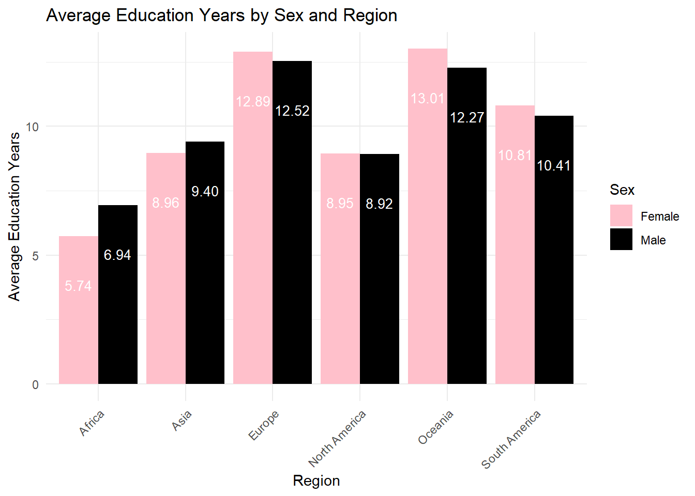

Rows: 212969 Columns: 86
── Column specification ────────────────────────────────────────────────────────
Delimiter: ","
chr (14): iso_code, region_group, income_group, country, survey, level, cate...
dbl (72): year, grade, comp_prim_v2_m, comp_lowsec_v2_m, comp_upsec_v2_m, co...
ℹ Use `spec()` to retrieve the full column specification for this data.
ℹ Specify the column types or set `show_col_types = FALSE` to quiet this message.
As the Ethnicity is being divided too detailed, we hope to regather the ethnicity in simply a few groups, such as Asian, Hispanic, Black, White…We need to find another table in order to regroup.
# A tibble: 12 × 4
region Location mean_educ_years count_non_missing
<chr> <chr> <dbl> <int>
1 Africa Rural 4.88 82
2 Africa Urban 8.31 82
3 Asia Rural 8.42 51
4 Asia Urban 10.2 49
5 Europe Rural 10.9 2
6 Europe Urban 13.5 3
7 North America Rural 6.05 14
8 North America Urban 9.39 14
9 Oceania Rural NaN 0
10 Oceania Urban NaN 0
11 South America Rural 8.65 25
12 South America Urban 11.0 25
All the regions show that people in urban area has longer average education years for age group 20-24 years old. In general, the average education years is the longest in Europe while shortest in Africa.
By Sex
Sex_mean_edu_years <- merged_data |>filter(category =='Sex') |>group_by(region, Sex) %>%summarise(mean_educ_years =mean(eduyears_2024_m, na.rm =TRUE), count_non_missing =sum(!is.na(eduyears_2024_m)), .groups ='drop')ggplot(Sex_mean_edu_years, aes(x = region, y = mean_educ_years, fill = Sex)) +geom_bar(stat ="identity", position =position_dodge()) +scale_fill_manual(values =c("Female"="pink", "Male"="black")) +geom_text(aes(label =sprintf("%.2f", mean_educ_years)), position =position_dodge(width =0.9), vjust =5, size =3.5, color ="white") +labs(title ="Average Education Years by Sex and Region",x ="Region", y ="Average Education Years") +theme_minimal() +theme(axis.text.x =element_text(angle =45, hjust =1))

Sex_mean_edu_years
# A tibble: 12 × 4
region Sex mean_educ_years count_non_missing
<chr> <chr> <dbl> <int>
1 Africa Female 5.74 83
2 Africa Male 6.94 83
3 Asia Female 8.96 51
4 Asia Male 9.40 51
5 Europe Female 12.9 3
6 Europe Male 12.5 3
7 North America Female 8.95 18
8 North America Male 8.92 18
9 Oceania Female 13.0 1
10 Oceania Male 12.3 1
11 South America Female 10.8 27
12 South America Male 10.4 27
by ethnicity[too detailed]
#count the number of distinct ethnicitiesnumber_of_distinct_ethnicities <- DataEth %>%summarise(count_distinct_ethnicity =n_distinct(Ethnicity))number_of_distinct_ethnicities
# A tibble: 1 × 1
count_distinct_ethnicity
<int>
1 729
#calculate the mean education years for age group 20-24 after grouping by region and ethnicityEthnicity_mean_edu_years <- merged_data |>filter(category =='Ethnicity') |>group_by(region, Ethnicity) %>%summarise(mean_educ_years =mean(eduyears_2024_m, na.rm =TRUE), count_non_missing =sum(!is.na(eduyears_2024_m)), .groups ='drop')#plot the bar graphggplot(Ethnicity_mean_edu_years, aes(x = region, y = mean_educ_years, fill = Ethnicity)) +geom_bar(stat ="identity", position =position_dodge()) +geom_text(aes(label =sprintf("%.2f", mean_educ_years)), position =position_dodge(width =0.9), vjust =5, size =3.5, color ="white") +labs(title ="Average Education Years by Ethnicity and Region",x ="Region", y ="Average Education Years") +theme_minimal() +theme(axis.text.x =element_text(angle =45, hjust =1))
# A tibble: 631 × 4
region Ethnicity mean_educ_years count_non_missing
<chr> <chr> <dbl> <int>
1 Africa Acholi NaN 0
2 Africa Adamaoua Oubangui 5.40 1
3 Africa Adja 3.87 3
4 Africa Adja & Apparentes NaN 0
5 Africa Adja Ewe NaN 0
6 Africa Adja Ewe/Mina 7.82 1
7 Africa Affar 0.903 2
8 Africa Affar / Adal, Danakil, Denkel 0.488 1
9 Africa African 9.24 1
10 Africa Afrikaans 10.8 1
# ℹ 621 more rows
There are 700+ distinct ethnicities which is over detailed that we are not able to apply this information to our analysis.
by Region[too detailed]
#count the number of distinct regionsnumber_of_distinct_regions <- merged_data |>filter(category =='Region') |>summarise(count_distinct_regions =n_distinct(Region))number_of_distinct_regions
count_distinct_regions
1 1308
#calculate meanRegion_mean_edu_years <- merged_data |>filter(category =='Region') |>group_by(region, Region) %>%summarise(mean_educ_years =mean(eduyears_2024_m, na.rm =TRUE),count_non_missing =sum(!is.na(eduyears_2024_m)), .groups ='drop')#plot bar graphggplot(Region_mean_edu_years, aes(x = region, y = mean_educ_years, fill = Region)) +geom_bar(stat ="identity", position =position_dodge()) +geom_text(aes(label =sprintf("%.2f", mean_educ_years)), position =position_dodge(width =0.9), vjust =5, size =3.5, color ="white") +labs(title ="Average Education Years by Region and region",x ="Region", y ="Average Education Years") +theme_minimal() +theme(axis.text.x =element_text(angle =45, hjust =1))
# A tibble: 1,344 × 4
region Region mean_educ_years count_non_missing
<chr> <chr> <dbl> <int>
1 Africa Abia NaN 0
2 Africa Adamaoua 5.12 2
3 Africa Adamawa NaN 0
4 Africa Addis Ababa 8.59 3
5 Africa Adrar NaN 0
6 Africa Afar 2.34 3
7 Africa Agadez 3.06 2
8 Africa Akwa Ibom NaN 0
9 Africa Al Gadarif NaN 0
10 Africa Al Gazira NaN 0
# ℹ 1,334 more rows
by wealth
Wealth_mean_edu_years <- merged_data |>filter(category =='Wealth') |>group_by(region, Wealth) %>%summarise(mean_educ_years =mean(eduyears_2024_m, na.rm =TRUE), count_non_missing =sum(!is.na(eduyears_2024_m)), .groups ='drop')ggplot(Wealth_mean_edu_years, aes(x = region, y = mean_educ_years, fill = Wealth)) +geom_bar(stat ="identity", position =position_dodge()) +geom_text(aes(label =sprintf("%.2f", mean_educ_years)), position =position_dodge(width =0.9), vjust =5, size =3.5, color ="black") +labs(title ="Average Education Years by Wealth and Region",x ="Region", y ="Average Education Years") +theme_minimal() +theme(axis.text.x =element_text(angle =45, hjust =1))
Wealth_mean_edu_years
# A tibble: 30 × 4
region Wealth mean_educ_years count_non_missing
<chr> <chr> <dbl> <int>
1 Africa Quintile 1 3.51 72
2 Africa Quintile 2 4.56 72
3 Africa Quintile 3 5.55 72
4 Africa Quintile 4 6.88 72
5 Africa Quintile 5 9.32 72
6 Asia Quintile 1 7.11 46
7 Asia Quintile 2 8.21 46
8 Asia Quintile 3 9.00 46
9 Asia Quintile 4 10.0 46
10 Asia Quintile 5 11.6 46
# ℹ 20 more rows
For all regions, the higher the wealth level, the longer the average education years. However, we should be careful that some regions only have a few data. For example, Oceania only has 1 data for each quintile and Europe only has 3 data points for each quintile, which may cause data collection bias.
by religion[too detailed but can do some data cleaning]
Religion_mean_edu_years <- merged_data |>filter(category =='Religion') |>group_by(region, Religion) %>%summarise(mean_educ_years =mean(eduyears_2024_m, na.rm =TRUE), count_non_missing =sum(!is.na(eduyears_2024_m)), .groups ='drop')ggplot(Religion_mean_edu_years, aes(x = region, y = mean_educ_years, fill = Religion)) +geom_bar(stat ="identity", position =position_dodge()) +geom_text(aes(label =sprintf("%.2f", mean_educ_years)), position =position_dodge(width =0.9), vjust =5, size =3.5, color ="black") +labs(title ="Average Education Years by Religion and Region",x ="Region", y ="Average Education Years") +theme_minimal() +theme(axis.text.x =element_text(angle =45, hjust =1))
# A tibble: 120 × 4
region Religion mean_educ_years count_non_missing
<chr> <chr> <dbl> <int>
1 Africa . 6.95 4
2 Africa Adventist 5.58 2
3 Africa Adventist/Jehova 7.50 1
4 Africa Anglican 7.12 5
5 Africa Animist 3.76 3
6 Africa Animiste/Pas De Religion NaN 0
7 Africa Apostolic Sect 8.71 4
8 Africa Armee De Salut NaN 0
9 Africa Assemblee De Dieu NaN 0
10 Africa Assembly Of God 7.53 2
# ℹ 110 more rows
ANOVA for Sex, Wealth, and Location vs. Mean Education Years 20_24
library(dplyr)# Assuming your data is in a dataframe called dataSexdata <- merged_data |>filter(category =='Sex')Locationdata <- merged_data |>filter(category =='Location')Wealthdata <- merged_data |>filter(category =='Wealth')# Perform ANOVA to check if mean of y differs by categories of each categorical variableanova_cat1 <-aov(eduyears_2024_m ~ Sex, data = Sexdata)anova_cat2 <-aov(eduyears_2024_m ~ Location, data = Locationdata)anova_cat3 <-aov(eduyears_2024_m ~ Wealth, data = Wealthdata)# Get the summaries of the ANOVA testssummary(anova_cat1)
Df Sum Sq Mean Sq F value Pr(>F)
Sex 1 32.3 32.28 3.761 0.0532 .
Residuals 364 3124.1 8.58
---
Signif. codes: 0 '***' 0.001 '**' 0.01 '*' 0.05 '.' 0.1 ' ' 1
4006 observations deleted due to missingness
summary(anova_cat2)
Df Sum Sq Mean Sq F value Pr(>F)
Location 1 676.7 676.7 100.5 <2e-16 ***
Residuals 345 2322.1 6.7
---
Signif. codes: 0 '***' 0.001 '**' 0.01 '*' 0.05 '.' 0.1 ' ' 1
3879 observations deleted due to missingness
summary(anova_cat3)
Df Sum Sq Mean Sq F value Pr(>F)
Wealth 4 2463 615.8 64.31 <2e-16 ***
Residuals 810 7757 9.6
---
Signif. codes: 0 '***' 0.001 '**' 0.01 '*' 0.05 '.' 0.1 ' ' 1
9307 observations deleted due to missingness
As p value is smaller than alpha = 0.05 for Location and Wealth, the two categorical values are statistically significant to the average education years.
Mean Education Years By Different Completion rate (Continuous Variables)
Before regression analysis, grouping by categories of sex, wealth, location 6 Variables: -Primary completion rate: Percentage of (i) children and young people aged 3‐5 years above primary school graduation age and (ii) young people aged 15‐24 years, who have completed primary school. -Lower secondary completion rate: Percentage of (i) young people aged 3‐5 years above lower secondary school graduation age and (ii) young people aged 15‐24 years, who have completed lower secondary school. -Upper secondary completion rate: Percentage of (i) young people aged 3‐5 years above upper secondary school graduation age and (ii) people aged 20‐29 years, who have completed upper secondary school. [Think about possible Multicollinearity]
By Location
library(tidyverse)#Boxplots for Urban OnlyUrban <- merged_data %>%filter(category =='Location') |>filter(Location =="Urban")# Reshaping the data from wide to long formatlong_data <- Urban %>%pivot_longer(cols =c(comp_prim_v2_m, comp_prim_1524_m, comp_lowsec_v2_m, comp_lowsec_1524_m, comp_upsec_v2_m, comp_upsec_2029_m), names_to ="variable", values_to ="value" )# Creating the box plot with all variablesggplot(long_data, aes(x = variable, y = value)) +geom_boxplot() +labs(title ="Box plot of Variables in Location of Urban", x ="", y ="Completion Rate") +theme(axis.text.x =element_text(angle =45, hjust =1)) # Rotate x labels if needed
#Boxplots for Rural Only {may mainly focus on this location where needs more education resources}Rural <- merged_data %>%filter(category =='Location') |>filter(Location =="Rural")# Reshaping the data from wide to long formatlong_data <- Rural %>%pivot_longer(cols =c(comp_prim_v2_m, comp_prim_1524_m, comp_lowsec_v2_m, comp_lowsec_1524_m, comp_upsec_v2_m, comp_upsec_2029_m), names_to ="variable", values_to ="value" )# Creating the box plot with all variablesggplot(long_data, aes(x = variable, y = value)) +geom_boxplot() +labs(title ="Box plot of Variables in Location of Rural", x ="", y ="Completion Rate") +theme(axis.text.x =element_text(angle =45, hjust =1)) # Rotate x labels if needed
As we expected, the primary completion rate > the lower secondary completion rate > the higher secondary completion rate, indicated by the box (Q1, median, Q3) that the median primary completion rates approaches or greater than 0.75. Also, we found that the general completion rate at rural is lower than that in urban area.
Try Simple Linear Regression
library(ggplot2)library(gridExtra) # For arranging the plots
Attaching package: 'gridExtra'
The following object is masked from 'package:dplyr':
combine
# Assume your dependent variable is named 'y' and your data is in a dataframe named 'data'Location <- merged_data %>%filter(category =='Location') # Create a list of plotsplots <-list()variables <-c("comp_prim_v2_m", "comp_prim_1524_m", "comp_lowsec_v2_m", "comp_lowsec_1524_m", "comp_upsec_v2_m", "comp_upsec_2029_m")for (var in variables) { p <-ggplot(Location, aes_string(x = var, y ="eduyears_2024_m")) +geom_point() +geom_smooth(method ="lm", se =TRUE) +labs(title =paste("Regression of y on", var),x = var, y ="y") plots[[var]] <- p}
Warning: `aes_string()` was deprecated in ggplot2 3.0.0.
ℹ Please use tidy evaluation idioms with `aes()`.
ℹ See also `vignette("ggplot2-in-packages")` for more information.
# Arrange the plots in a griddo.call(gridExtra::grid.arrange, plots)
Multicolinearity: because the secondary completion rates highly depends on the primary completion rate, so we will not use all of them [just pick one of them]. Remove the ones for upper secondary because the ages(either 3-5 above 18, which will be 21-23, or 20-29) is already over 20-24 age groups.
Multiple Linear Regression Model
x = as.factor(wealth), as factor(location), Percentage of (i) children and young people aged 3‐5 years above primary school graduation age and (ii) young people aged 15‐24 years, who have completed primary school.
library(ggplot2)#filter by location and wealthmlr1Data <- merged_data %>%filter(category =='Location & Wealth') # multiple regression modelmodel <-lm(eduyears_2024_m ~ comp_prim_1524_m+ comp_prim_v2_m + Location + Wealth, data = mlr1Data)# Interaction plot for a continuous and one categorical variableggplot(mlr1Data, aes(x = comp_prim_v2_m, y = eduyears_2024_m, color = Wealth)) +geom_point(alpha =0.6) +# Use points with some transparencygeom_smooth(method ="lm", aes(group = Wealth), se =FALSE) #+ # Add regression lines
#facet_wrap(~ Wealth) + # Create separate plots for each level of the second categorical variablelabs(title ="Multiple Linear Regression Model with Continuous and Categorical Predictors",x ="Continuous Variable",y ="Dependent Variable") +theme_minimal()